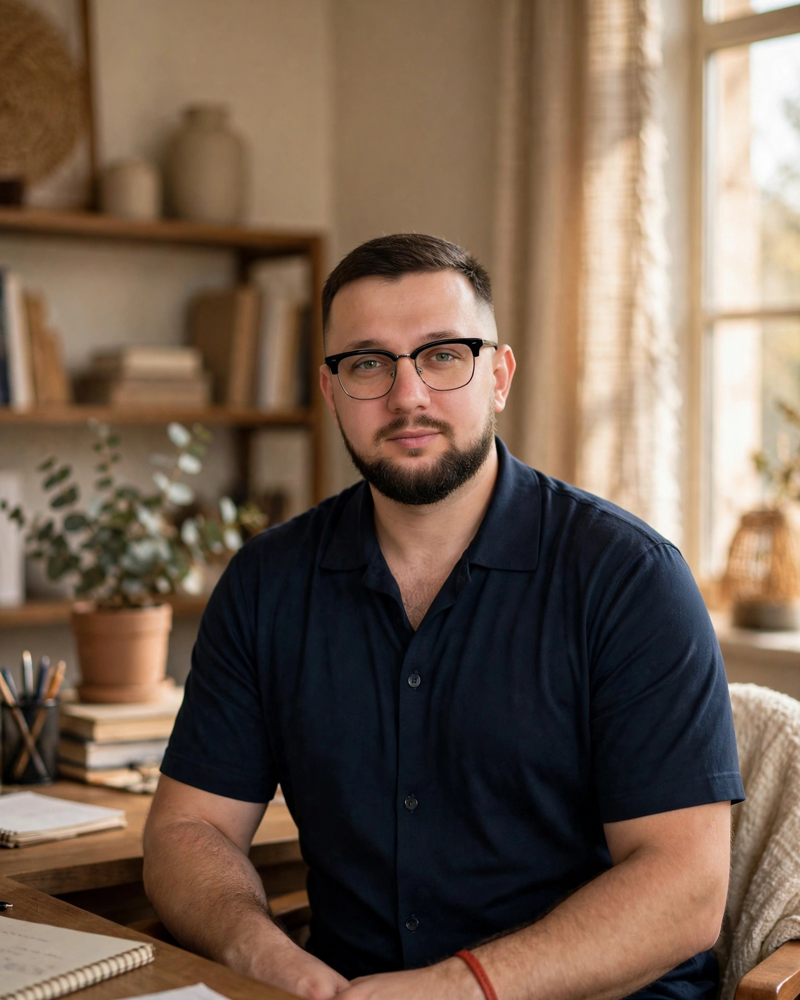
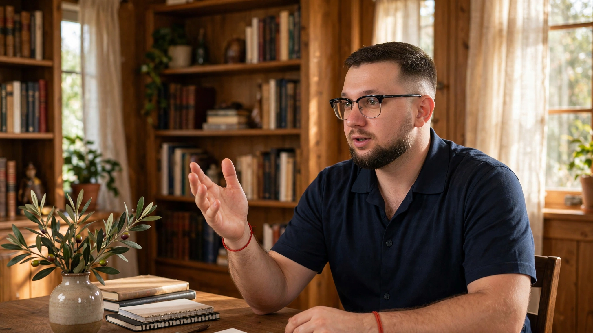

Обіцянок багато — пояснень мало
Про дохід говорять гучно. А як усе влаштовано всередині — тихо, ніби це секрет.
Спокійний розбір п’яти напрямів: що це, як працює, де можливості — і де ризики. Без обіцянок і без тиску.

Шуму про дохід багато. Зрозумілого — мало.
Про дохід говорять гучно. А як усе влаштовано всередині — тихо, ніби це секрет.
Токенізація, алгоритми, автопілот — звучить складно, хоча суть кожного інструмента проста.
Про можливості кричать. Про ризики згадують між рядків — або не згадують взагалі.
Коли пояснень бракує, рішення приймаються наосліп. А це — найдорожчий спосіб учитися. Тому цей вебінар — не про «встигни», а про «зрозумій».
П’ять інструментів. Один спокійний розбір.
Кожен блок: як влаштовано → можливості → ризикиРеальне дерево представлене цифровим токеном, який фіксує вашу частку.
Дотик до аграрного активу без купівлі плантації.
Залежність від оператора, урожайність, ліквідність токена.
Частка в об’єкті нерухомості, оформлена токенами.
Поріг входу нижчий, ніж купівля цілого об’єкта.
Юридична рамка, ліквідність частки, коливання ринку.
Алгоритм виконує угоди за заздалегідь заданими правилами.
Працює без перерв і без емоцій.
Волатильність ринку, технічні збої, помилки в налаштуваннях.
Електромобіль працює в перевезеннях замість простою в гаражі.
Транспорт перетворюється з витрати на актив.
Знос, простої, витрати на обслуговування та зарядку.
Авто виконує поїздки без водія за кермом.
Масштабування парку без найму водіїв.
Регулювання, технологічні обмеження, питання відповідальності.
Хто проведе вас крізь п’ять тем — спокійно і по суті.

Формат вебінару — спокійний гід: як влаштовано → можливості → ризики. Жодного тиску й жодних обіцянок.
Пояснення — простою мовою, з нуля: підійде, навіть якщо ви ще не інвестор і чуєте ці терміни вперше.
Іван Косович
Спікер вебінару «Інструменти доходу різного рівня ризику»
Як потрапити на вебінар — три прості кроки.
Відкриється Telegram-бот.
Бот проведе тебе далі — це займе хвилину.
Спокійно, у своєму темпі.
Питання і відповіді — чесно, як і весь вебінар.
П’ять інструментів. Чесно про можливості. Чесно про ризики.
Отримати доступ у Telegram